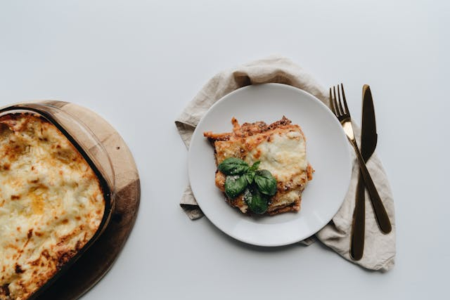

Lasagne

Ingredients
- Beef
- Canned Tomato
- Tomato Paste
- Seasoning - beef bouillon cubes, bay leaves, thyme, oregano
Steps
-
Make the Meat Sauce:
Heat olive oil in a large pot, sauté onion and garlic until softened.
Add ground beef and cook until browned. Stir in tomato paste, canned tomatoes, herbs, and bouillon cubes.
Simmer gently for at least 30 minutes to develop a rich, thick sauce.
-
Make the White Sauce (Béchamel):
Melt butter in a saucepan, whisk in flour to form a roux.
Gradually whisk in warm milk until smooth and thickened.
Season with a pinch of nutmeg, salt, and pepper.
-
Assemble the Lasagne:
In a baking dish, spread a thin layer of meat sauce.
Add lasagne sheets, then white sauce, then cheese.
Repeat the layers until the dish is full, finishing with béchamel and a generous topping of mozzarella and parmesan.
-
Bake:
Bake in a preheated oven at 180°C (350°F) for about 40 minutes,
until the top is golden and bubbling.
Rest for 10 minutes before slicing to let the layers set.
← Back to Home